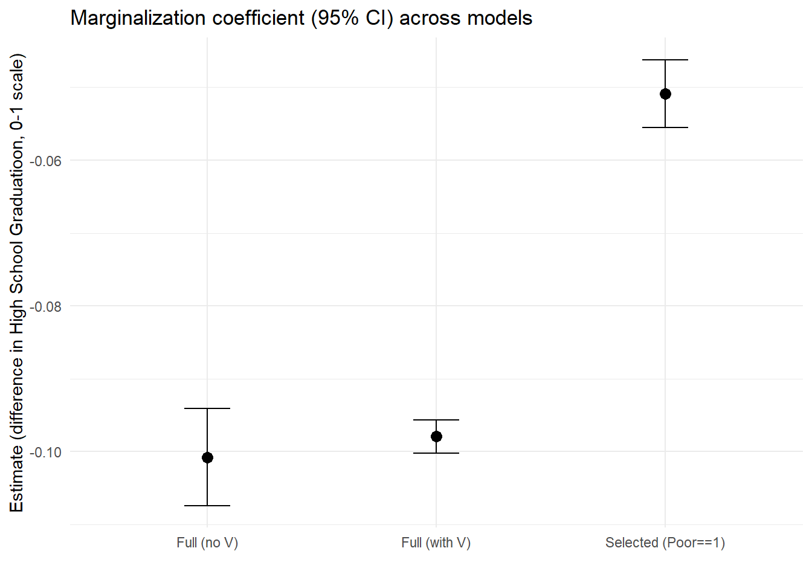

We’re interested in estimating the impact of discrimination (referred to as marginalized or marginalization going forward) on educational outcomes (we could look at any number of different education-related outcomes; today, we’ll focus on high school graduation, hs_grad) in a city where lower-income neighborhoods carry a higher risk of exposure to environmental hazards than higher-income neighborhoods (low_income_nhood). We’ll focus specifically on the risk of exposure to lead, a toxin associated with cognitive and behavioral impairments, via chipped paint and lead-contaminated dust in older homes that may not have been properly maintained over the years.
We start by sketching a simple graphical model (a Directed Acyclic Graph or DAG) representing a hypothesized explanation of the ways in which marginalization impacts hs_grad. Each variable in the DAG is represented by a node, while an edge or arrow between two nodes indicates a causal relationship in the direction of the arrow.
This model proposes two pathways through which marginalization can shape hs_grad
Questions:
Can you identify the direct and indirect pathways connecting marginalization to hs_grad?
In addition to the direct & indirect pathways connecting marginalization to hs_grad, there is one more causal pathway shown in this model. What is it? (i.e., ‘X has a direct/indirect impact Y’)
Can you think of a plausible reason (or reasons) for the hypothesized relationships between marginalization, low_income_nhood, and hs_grad that are shown in the DAG below?
We know that not everyone experiences identical educational outcomes. Do you think this model does a good job of explaining why different people have different educational experiences (whether hs_grad or educational outcomes more broadly)?
A more realistic DAG recognizes that factors other than discrimination may lead to living in poor neighborhoods. We’ll refer to these factors as vulnerabilities (V).
What are some possible examples of V?
Once included as a variable in the model, we notice that while V does influence low_income_nhood, it doesn’t only influence low_income_nhood. It may also influence hs_grad; to reflect this, we connect these variables with a causal edge. These Vulnerabilities are often difficult to observe, and thus difficult to identify in data, which we note using a dotted contour.
The updated DAG looks like this:
Now, let’s say our data was restricted to a school district where the majority of students face poverty. In other words, if, in our data, low_income_nhood is a binary variable where 1 == “poor neighborhood” and 0 == “non-poor neighborhood”, low_income_nhood is fixed at 1 (and no longer a variable, as it doesn’t vary).
In this scenario, we are “selecting” on low_income_nhood (a collider), which opens up a non-causal pathway between marginalization and hs_grad.
The updated DAG looks like this:
How does selection on a collider bias our estimates on the causal effect of discrimination on high school graduation?
To explore this question, we will simulate data that mirrors the relationships specified in our DAG. The data simulation also needs to make assumptions about the statistical characteristics of the data such as distributional forms and parameters. In reality, we would work with real data, make distributional assumption and estimate parameters under those assumptions. However, simulated data works well to illustrate collider bias as we can see how the “real” (simulated) parameters compare to those estimated when bias is present.
Let’s examine the data we just created. What do you notice when comparing all students vs. those living in poor neighborhood vs. those living in non-poor neighborhoods?
In this table, the mean values for Marginalization and low_income_nhood can be interpreted as ‘the probability that a student belongs to a marginalized group’ and ‘the probability that a student lives in a poor neighborhood’, respectively.
These probability statements can also be written as:
P(Marginalization) and
P(low_income_nhood)
If we look only at the subset of students living in a low-income neighborhood, the mean value of Marginalization can be interpreted as ‘the probability that a student belongs to a marginalized group, given that they live in a poor neighborhood’, or
P(Marginalization|low_income_nhood == 1)
And if we focus only on students living in non-poor neighborhoods, the mean value of Marginalization can be interpreted as ‘the probability that a student belongs to a marginalized group, given that they live in a non-poor neighborhood’, or
P(Marginalization|low_income_nhood == 0)
Next let’s see how the variables in our simulated data are correlated with one another overall, and among the subset of student living in poor neighborhoods.
What is the correlation coefficient on marginalization and vulnerabilities in the full sample? Do they have a strong relationship?
What about when we restrict our data to students living in poor neighborhoods? What is the nature of the relationship between marginalization and vulnerabilities now?
See how marginalization and vulnerabilities are NOT correlated in the entire sample, but for the data on students in poor neighborhoods only, marginalization and vulnerabilities appear to be negatively correlated.
This is a product of selecting on a collider and leads to bias in our estimation of causal effects of marginalization on high school graduation.
We first estimate parameters in linear regressions for all data (poor and non-poor neighborhoods) to see if we can recover the causal effect estimates of marginalization on hs_grad.
# Estimate parameters in linear regressions for all data (poor and non-poor neighborhoods) to see if we can recover the causal effect estimates of Marginalization on hs_grad
lm_full <- lm(hs_grad ~ Marginalization, data = df) # Observational realistic model (V unobserved)
summary(lm_full)##
## Call:
## lm(formula = hs_grad ~ Marginalization, data = df)
##
## Residuals:
## Min 1Q Median 3Q Max
## -0.46270 -0.13776 0.03409 0.11927 0.46435
##
## Coefficients:
## Estimate Std. Error t value Pr(>|t|)
## (Intercept) 0.535645 0.001855 288.73 <2e-16 ***
## Marginalization -0.100786 0.003392 -29.72 <2e-16 ***
## ---
## Signif. codes: 0 '***' 0.001 '**' 0.01 '*' 0.05 '.' 0.1 ' ' 1
##
## Residual standard error: 0.1553 on 9998 degrees of freedom
## Multiple R-squared: 0.08115, Adjusted R-squared: 0.08106
## F-statistic: 883.1 on 1 and 9998 DF, p-value: < 2.2e-16Then we assume we only have data for students living in poor neighborhoods (selection on collider) and run the regression for this data.
# Now assume we only have data for students living in poor neighborhoods (selection on collider) and run the regression for this data.
lm_sel <- lm(hs_grad ~ Marginalization, data = df[df$low_income_nhood == 1,]) # selected-only
summary(lm_sel)##
## Call:
## lm(formula = hs_grad ~ Marginalization, data = df[df$low_income_nhood ==
## 1, ])
##
## Residuals:
## Min 1Q Median 3Q Max
## -0.302692 -0.044936 0.006984 0.049444 0.221835
##
## Coefficients:
## Estimate Std. Error t value Pr(>|t|)
## (Intercept) 0.353558 0.001440 245.53 <2e-16 ***
## Marginalization -0.050867 0.002365 -21.51 <2e-16 ***
## ---
## Signif. codes: 0 '***' 0.001 '**' 0.01 '*' 0.05 '.' 0.1 ' ' 1
##
## Residual standard error: 0.07243 on 4018 degrees of freedom
## Multiple R-squared: 0.1032, Adjusted R-squared: 0.103
## F-statistic: 462.5 on 1 and 4018 DF, p-value: < 2.2e-16Finally assume we do not take into account neighborhood poverty/income, but can observe Vulnerabilities (unfeasible in practice), so we are able to control for this confounder. This model should give better estimates of the causal effect of marginalization on hs_grad.
# Finally assume we observed Vulnerabilities so we could control for this confounder
lm_ref <- lm(hs_grad ~ Marginalization + Vulnerabilities, data = df) # reference (unfeasible in practice)
summary(lm_ref)##
## Call:
## lm(formula = hs_grad ~ Marginalization + Vulnerabilities, data = df)
##
## Residuals:
## Min 1Q Median 3Q Max
## -0.171132 -0.037177 0.000694 0.037447 0.189894
##
## Coefficients:
## Estimate Std. Error t value Pr(>|t|)
## (Intercept) 0.5340722 0.0006238 856.10 <2e-16 ***
## Marginalization -0.0979229 0.0011405 -85.86 <2e-16 ***
## Vulnerabilities -0.1476752 0.0005273 -280.05 <2e-16 ***
## ---
## Signif. codes: 0 '***' 0.001 '**' 0.01 '*' 0.05 '.' 0.1 ' ' 1
##
## Residual standard error: 0.05222 on 9997 degrees of freedom
## Multiple R-squared: 0.8961, Adjusted R-squared: 0.8961
## F-statistic: 4.312e+04 on 2 and 9997 DF, p-value: < 2.2e-16We see, in fact, that this negative effect is the strongest in the model with all variables including vulnerabilities and the smallest when collider bias is present.
This is an example of how, even when we have population data (meaning data from all students in a school district), our estimates may carry bias.

A salient example of collider bias was featured in a study that used police records (selected sample) to estimate the effects of segregation on use of force by police and erroneously found minimal effects. https://jmummolo.scholar.princeton.edu/publications/bias-built-how-administrative-records-mask-racially-biased-policing
Look for other cases of collider bias in public health and social welfare to become familiar with this type of bias and its potential impact on social policy. https://pmc.ncbi.nlm.nih.gov/articles/PMC6452862/